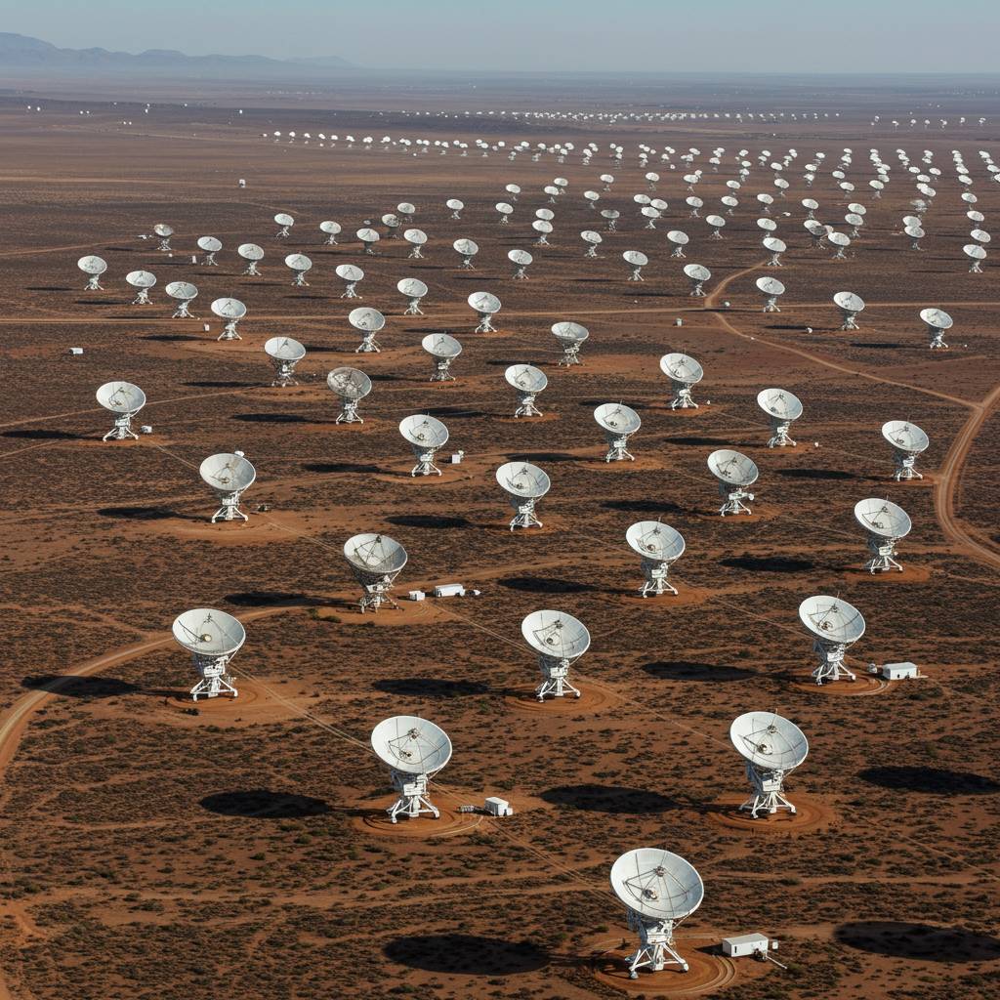

MeerKAT
Ubicación: Northern Cape, Sudáfrica
Inicio de operaciones: 2018 (activo)
Tipo de instalación: Matriz de radiotelescopios
Objetivo
Realizar estudios detallados del universo en radiofrecuencias, mapeo de gas neutro (HI), púlsares, agujeros negros y galaxias activas, así como apoyo al proyecto internacional SKA (Square Kilometre Array).
Principales descubrimientos
- Imagen más detallada jamás obtenida de regiones del centro galáctico.
- Detección de numerosas nuevas radiogalaxias gigantes.
- Observación de filamentos magnéticos desconocidos cerca del centro de la Vía Láctea.
- Catálogo de miles de nuevas fuentes de radio.
Aportación histórica
MeerKAT es el radiotelescopio más sensible de su tipo en el hemisferio sur, clave para los estudios de evolución cósmica. Sirve como prototipo y núcleo del futuro SKA, el mayor radiotelescopio del mundo. Ha impulsado el liderazgo científico de África en astronomía de vanguardia.
Significado del nombre
MeerKAT combina la palabra afrikáans "meer" (más) con KAT (Karoo Array Telescope). También hace un guiño al animal surafricano suricata, símbolo de vigilancia y cooperación en grupo, reflejando el diseño en matriz.
Estado actual
Activo y en operación completa. Se integra progresivamente en el proyecto SKA. Continúa produciendo datos de alto impacto científico y mantiene colaboraciones internacionales para ampliar sus capacidades.